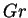

It is well known (Gebhart et al. 1988, pp. 728-30; Vest & Arpaci 1969) that the narrow cavity limit flow in the analogous single fluid problem; i.e. that reported by Jones & Furry (1946); is susceptible to both stationary and travelling instabilities. Thus, while the studies projected in §4.6.1 will define the aspect ratios for which the present solution is valid, a stability analysis must still be performed to determine the applicable range of  and the other parameters. This lies beyond the scope of the present project.